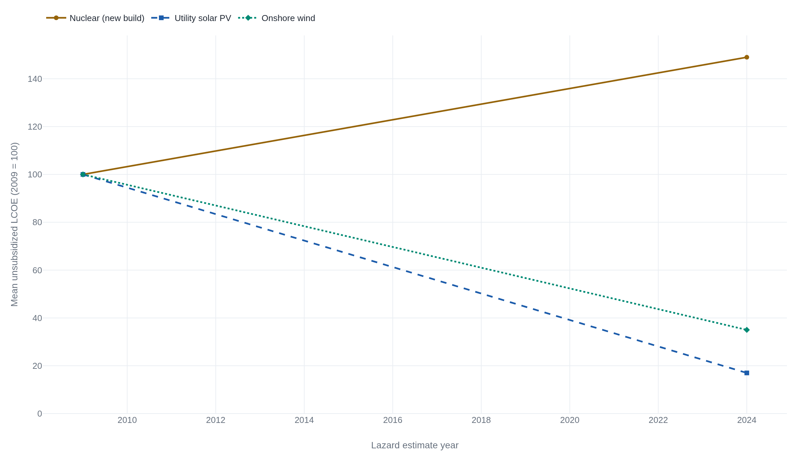

The New Data-Center Load Could Exceed America's Entire Nuclear Fleet
By 2028 data centers could draw up to 132 gigawatts of continuous power, more than the entire U.S. nuclear fleet supplies today, forcing a choice about which firm clean source can be built fast enough to feed them.
The United States should build a great deal of new nuclear power, and build it fast, because the firm, clean electricity the coming decade demands is a kind that wind and solar cannot deliver on their own.
The case is made in their own words by four working climate scientists who wrote in 2013 that there is no credible path to climate stabilization without a substantial role for nuclear power,1 by the eighteen authors of the Ecomodernist Manifesto, who call fission the only present-day zero-carbon technology with a demonstrated ability to power a modern economy,2 by Whole Earth founder Stewart Brand, who reversed his own movement to say it,3 and by a Congress that passed the ADVANCE Act to speed the licensing,4 88 to 2 in the Senate.5
The load the grid has to find
Start with the number that makes this an argument for tonight rather than for the 2050s. In 2023 U.S. data centers drew about 176 terawatt-hours of electricity, roughly 4.4 percent of the national total. A Lawrence Berkeley National Laboratory analysis for the Department of Energy projects that figure reaching 325 to 580 terawatt-hours by 2028, between 6.7 and 12 percent of all U.S. electricity, a new power draw of roughly 74 to 132 gigawatts.6 The top of that range is worth holding against a comparison the reader already carries. The entire operating U.S. nuclear fleet is about 97 gigawatts. The new load alone could exceed it.
A data center trains and serves models around the clock, so it wants power at three in the morning in a windless January as much as at noon in June. Electricity that must be delivered on demand, every hour, is what utilities call firm power. The live question is not whether the country builds firm clean power this decade. It is which firm clean power it builds. Lazard, the financial adviser whose annual cost study anchors the debate below, frames the same turn: baseload needs now require diverse generation fleets, driven by the rapid growth of artificial intelligence and data-center deployment.7
Fix the choice that way and the stakes come into focus. If the firm supply is not clean, it is gas, and the gigawatts get burned. The question is which clean machine can carry a load this large and this constant.
The ledger, at its worst
Concede the worst figure first, because the concession is what earns the argument that follows. Plant Vogtle in Georgia added two Westinghouse AP1000 reactors that were certified in 2009 to cost about $14 billion for the pair and to begin operating in 2016 and 2017. They came in at more than $30 billion by Georgia Power's own estimate, and entered service in 2023 and 2024, roughly seven years late.8 Press accounts that add every owner's share and Westinghouse's walk-away payment put the all-in figure near $35 billion. This is the honest ledger, and no advocate should launder it.
The trend is worse than one project. Lazard's 2024 study puts the unsubsidized levelized cost of new nuclear at $142 to $222 per megawatt-hour, against $29 to $92 for utility-scale solar and $27 to $73 for onshore wind.7 Levelized cost is the price per unit of energy a plant must earn over its life to pay back its construction, fuel, and operation. By that measure nuclear is the most expensive firm source on the board. It has also moved the wrong way. Since 2009 the levelized cost of new nuclear has risen 49 percent while solar fell 83 percent and onshore wind fell 65 percent.7

There is no honest way around this. On the price of the next marginal megawatt-hour, taken by itself, wind and solar win today, and they win by a wide margin. A pro-nuclear case that argues on levelized cost has already lost. So the case cannot be argued there. It has to be argued on the three things that number leaves out.
What the levelized cost leaves out
The first is firmness, and it is measured by capacity factor: the share of a plant's maximum possible annual output it actually delivers. The U.S. nuclear fleet runs at about 92 to 93 percent, the highest of any source on the grid. Onshore wind and solar sit in the range of 25 to 35 percent, and gas combined-cycle plants around 55 to 60 percent.9 A reactor rated at one gigawatt supplies close to a gigawatt all year. A solar farm rated at one gigawatt supplies roughly a quarter of that, and none of it at night.
This is why the levelized comparison flatters the wrong product. That figure averages a megawatt-hour across the whole year, treating the solar megawatt-hour delivered at noon and the nuclear megawatt-hour delivered at 3 a.m. as the same good. To a data center that runs continuously, they are not the same good. One arrives when the load is there and one does not, and closing that gap with storage or overbuild is a cost the levelized number never shows. The four scientists of the 2013 letter put the physical limit plainly: wind and solar "cannot scale up fast enough to deliver cheap and reliable power at the scale the global economy requires."1 Brand, writing years earlier from inside the environmental movement, reached the same conclusion about the same gap: "The only technology ready to fill the gap and stop the carbon dioxide loading of the atmosphere is nuclear power."3
The land, and the wires to reach it
The second and third things the cost number omits are land and transmission, and the capacity factor drives both. Because a wind or solar farm delivers only a quarter to a third of its rated power over a year, matching a reactor's firm output means building several times the nameplate capacity and spreading it across the ground. The ecomodernists make density their central claim: a clean transition needs energy technologies that are "power dense and capable of scaling to many tens of terawatts," and fission is the one that is.2 A reactor supplying a gigawatt occupies a campus. The wind or solar capacity needed to firm the same gigawatt occupies a landscape.
Then there are the wires. The best wind and the best sun are rarely where the load is, so a renewables-first grid has to carry power from the plains and deserts to the cities and the server farms over long transmission lines that take a decade to route, permit, and build. A data center sits at a fixed address chosen years before it draws its first watt. A reactor can be sited next to it, or on the footprint of a retiring coal plant that already owns the transmission rights, a use the ADVANCE Act specifically directs regulators to enable.4 Firm power that can be placed where the demand already is spares the grid its slowest and most contested project.
The serious case that renewables can do it alone
The strongest objection is not that renewables are cheaper, which is granted, but that they are sufficient, that the firm-power problem is an artifact of planning rather than physics. Its most credentialed form is Mark Jacobson's. In a series of peer-reviewed roadmaps, he and his co-authors argue that the United States can meet all of its energy needs, not only electricity but transport, heat, and industry, with close to 100 percent wind, water, and solar by 2050, at lower cost than a fossil system, with no nuclear and no fossil fuels at all. The 2050 mix leans on onshore and offshore wind and utility solar, backed by hydro, geothermal, and storage, with electrification cutting end-use demand by nearly two-fifths.10 If that model holds, the firmness argument dissolves, and nuclear is a costly detour.
It is a serious model, and it is genuinely contested by people with equal standing. Twenty-one researchers led by Christopher Clack published a peer-reviewed evaluation in the same literature, finding modeling errors and inadequate power-system modeling. Their central objection is a firmness objection: the roadmap implies hydropower discharging at close to 1,300 gigawatts, against roughly 150 gigawatts of installed U.S. hydro capacity.11 Jacobson answers that the 1,300 gigawatts is peak instantaneous discharge, an intentional modeling assumption rather than an error, and the two camps have not reconciled. The dispute does not settle whether a 100 percent renewable grid is possible. It shows that the hardest part of the all-renewables plan is exactly the part nuclear does not have to solve: keeping firm supply matched to demand through the windless, sunless hours, without inventing hundreds of gigawatts of dispatchable capacity the country does not have. A reactor supplies that firmness by running.
The other durable objection is waste and siting, and here the concession has to be real. The United States has no permanent geological repository for spent nuclear fuel. Yucca Mountain was defunded and the political stalemate is unresolved, and pretending otherwise would forfeit the reader's trust. What the waste is not is large. The Department of Energy, which owns the accounting and also promotes the technology, reports that every commercial reactor in the country has produced about 90,000 metric tons of spent fuel since the 1950s, and that stacked together it would cover a single football field to a depth of less than 10 yards.12 That is a volume a serious country can store on-site in dry casks, as many plants already do, while it settles the politics. It is a hard political problem sitting on top of a small physical one.
The fear underneath the waste objection is danger, and the danger is not in the mortality record. Counting the full chain of each source, including the Chernobyl and Fukushima death tolls, nuclear causes about 0.03 deaths per terawatt-hour of electricity, in the same range as wind at 0.04 and solar at 0.02, against 24.62 for coal and 2.82 for gas.13 The nuclear figure moves with how one counts Fukushima's long-tail deaths, and some versions place it near 0.07, but every version leaves it orders of magnitude below fossil fuels, which is Our World in Data's own summary: nuclear causes 99.8 percent fewer deaths than coal.13 The source the demand shock otherwise falls to is the one that kills at scale.
Say plainly what would move this paper off the position. If cheap, durable, grid-scale storage arrived that made a solar or wind megawatt firm and deliverable at the load for less than a reactor costs, the firmness, land, and transmission case would weaken to the point of collapse, and the levelized-cost verdict would simply win. That storage does not exist at the scale and price the argument would require, and betting a decade of firm demand on its arrival is the gamble, not the hedge. The politics, meanwhile, has already moved: the ADVANCE Act cleared the Senate 88 to 25 and the House 393 to 13,14 and the Nuclear Regulatory Commission rewrote its own mission to include enabling the safe deployment of civilian nuclear energy.4 The grid has to find the gigawatts. The firm, clean source that can be built where the demand already sits, and that has a mortality record beside wind and solar, is the one whose cost has risen. Its cost is the price of the thing the others cannot yet do.
Sources
- James Hansen, Ken Caldeira, Kerry Emanuel & Tom Wigley · Open letter to those influencing environmental policy but opposed to nuclear power (2013)
- John Asafu-Adjaye et al. · An Ecomodernist Manifesto (2015)
- Stewart Brand · Environmental Heresies, MIT Technology Review (2005)
- U.S. Nuclear Regulatory Commission · About the ADVANCE Act of 2024 (Accelerating Deployment of Versatile, Advanced Nuclear for Clean Energy Act)
- U.S. Senate · Roll Call Vote 200 (118th Cong., 2nd Sess.), Motion to Concur in the House Amendments to S. 870, June 18, 2024 — 88–2
- Lawrence Berkeley National Laboratory · 2024 United States Data Center Energy Usage Report (Dec. 2024)
- Lazard · Levelized Cost of Energy+ (LCOE), Version 17.0 (June 2024)
- U.S. Energy Information Administration · Plant Vogtle Unit 4 begins commercial operation, Today in Energy (2024)
- U.S. Energy Information Administration · U.S. nuclear generation and capacity-factor data
- Mark Z. Jacobson et al. · 100% clean and renewable wind, water, and sunlight all-sector energy roadmaps for the 50 United States, Energy & Environmental Science (2015)
- Christopher T. M. Clack et al. · Evaluation of a proposal for reliable low-cost grid power with 100% wind, water, and solar, PNAS (2017)
- U.S. Department of Energy, Office of Nuclear Energy · 5 Fast Facts about Spent Nuclear Fuel
- Hannah Ritchie, Our World in Data · What are the safest and cleanest sources of energy?
- Office of the Clerk, U.S. House of Representatives · Roll Call 194 (118th Cong., 2nd Sess.), S. 870, On Motion to Suspend the Rules and Pass, as Amended, May 8, 2024 — 393–13